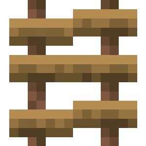

About
The rope ladder is a decorative block that can be hung from blocks!
Crafting
The rope ladder can be crafted with planks and string:



Extension
To extend any rope ladder simply place the rope ladder while targeting another rope ladder of the same type. There is a video demo showing this at the bottom of this page!
Breaking
Rope ladders can be broken with any item or by hand, but the axe is the fastest! Any rope ladders that are unsupported will break when the supporting block is removed.
Planter Box
| Renewable | Yes (Crafting) |
| Stackable | Yes (64) |
| Tool | Any tool, but the axe is the quickest! |
| Blast Resistance | 0.4 |
| Hardness | 0.4 |
| Luminous | No |
| Transparent | No |
| Catches fire from lava | No |